Sosa, Chiba: things to do, food and stays
Sosa · Chiba
Sosa
Highlighted on the Chiba map.
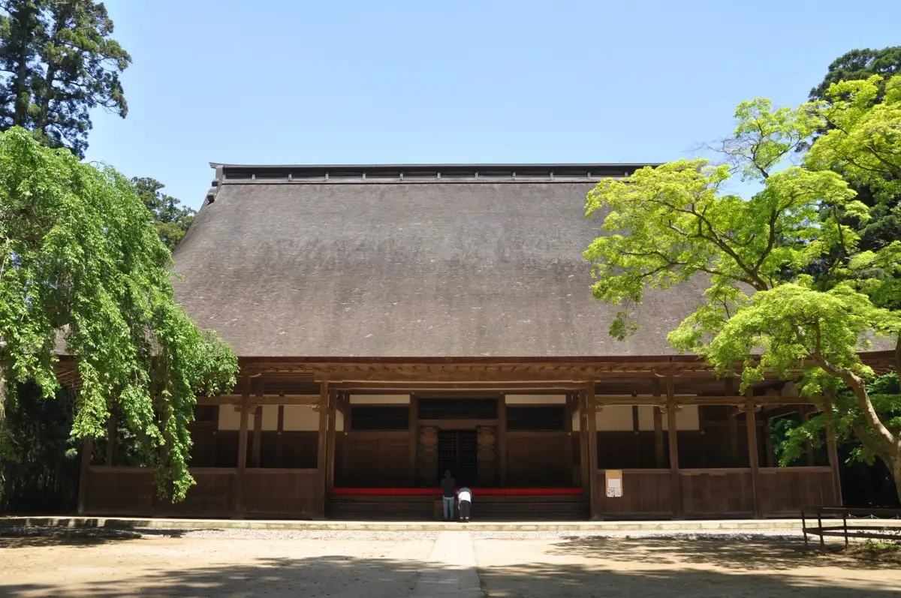
Stay
ＨＯＴＥＬ Ｒ９ Ｔｈｅ Ｙａｒｄ 匝瑳
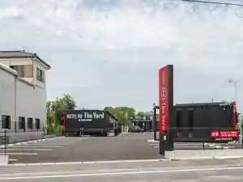
HOTEL R9 The Yard Sosa
ビジネスホテル竹屋
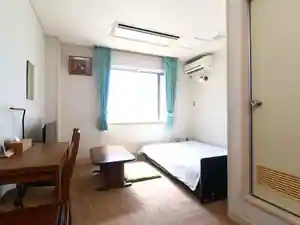
Business Hotel Takeya
Hotel in Yokaichibai, Sosa with business travelers.
ふくろう邸
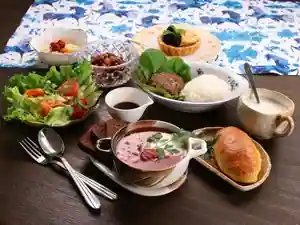
Fukuro Tei
民宿かず
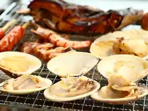
Minshuku Kazu
Family-run minshuku in Yashu, Sosa with local seafood dinners.
Dining
麺屋 いとう
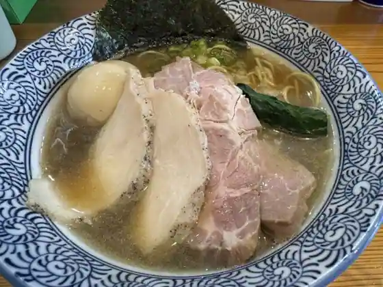
Men Ya Ito
下出羽 内山屋
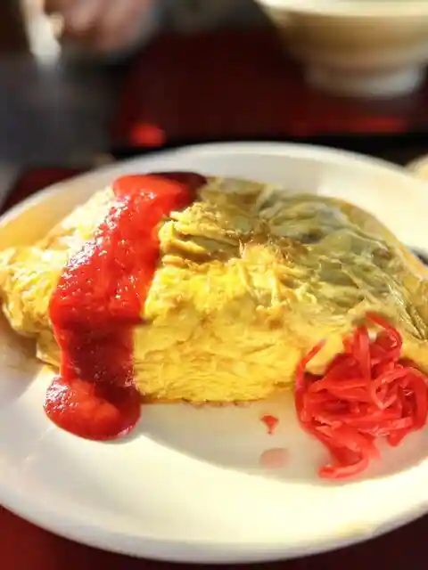
Shimode Hane Uchiyama Ya
浜っ子 八日市場店
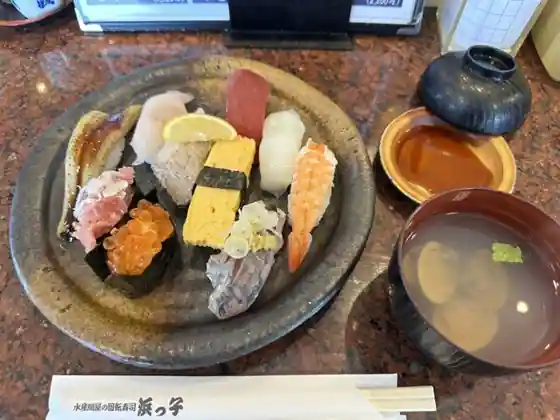
Hamakko Yokaichiba
たけおごはん
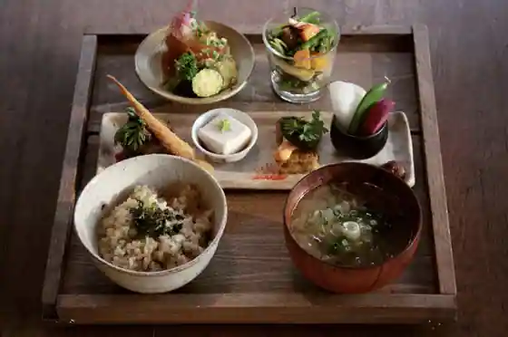
Takeogohan
食堂 おたふく
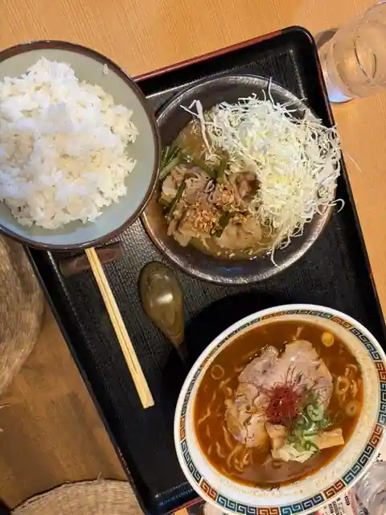
Shokudo Otafuku
食事処 辰巳
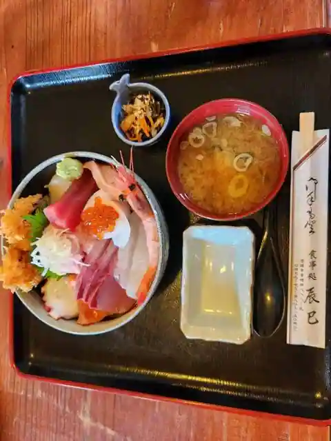
Shokuji Tokoro Tatsumi
海鮮料理の店 岩沢
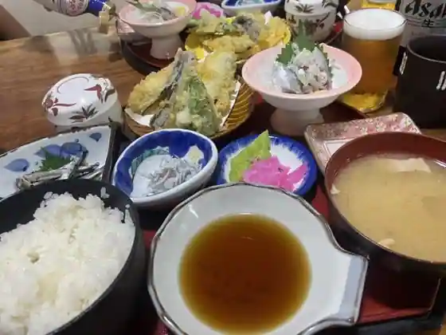
Kaisen Ryori No Iwasawa
ブリッジ
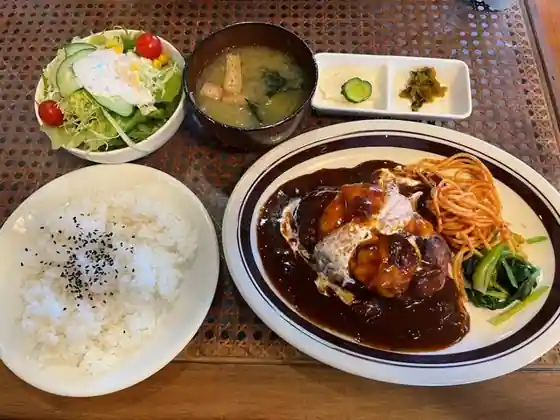
Burijji
そばの里 秋山郷
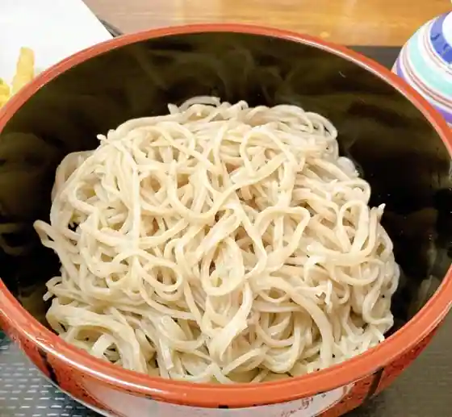
Sobano Sato Akiyama Sato
福玉
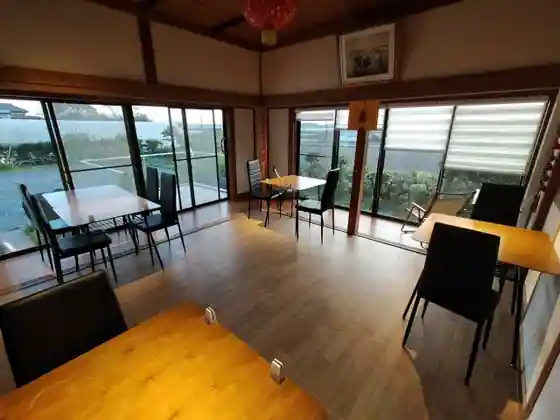
Fuku Tama
らーめん華小屋
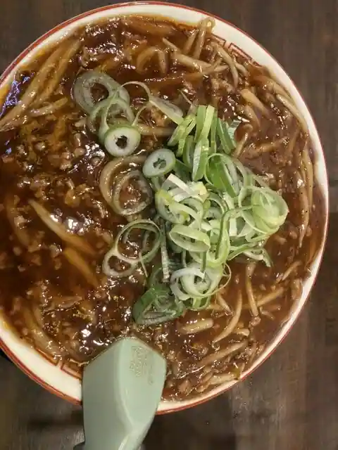
Ramen Hana Koya
かき氷 はるかふぇ
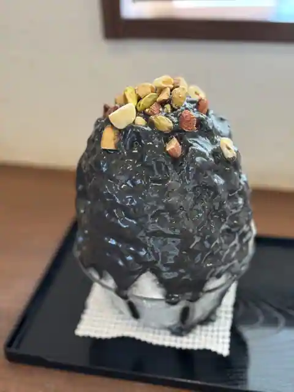
Kaki Kori Harukafe
焼肉せいざえもん Beyond八日市場店
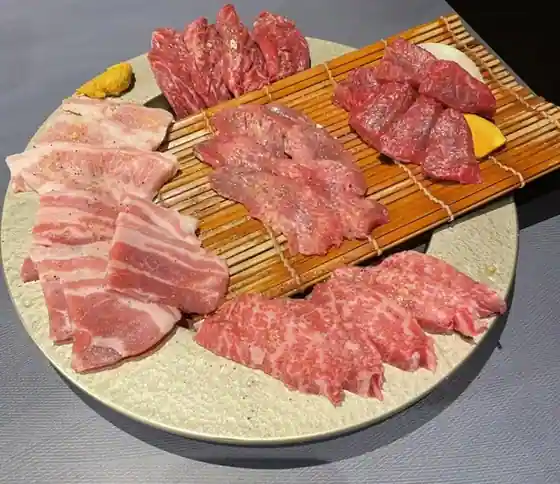
Yakiniku Seizaemon Beyond Yokaichiba
ひさ旨
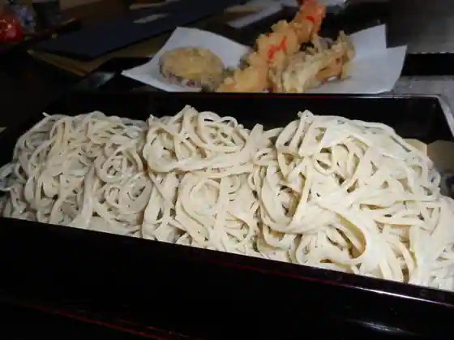
Hisa Mune
うれし野
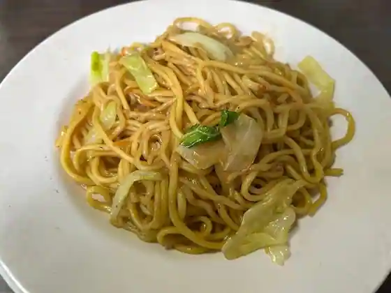
Ureshi No
坂本総本店
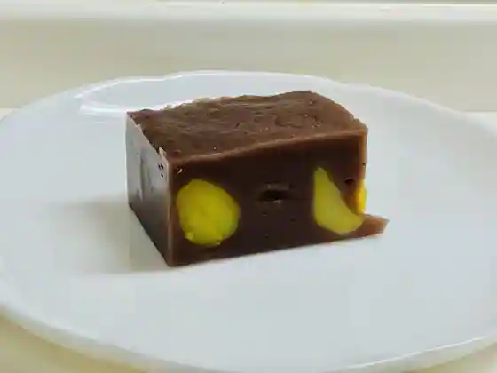
Sakamoto So Hon
隠れ家スズメ
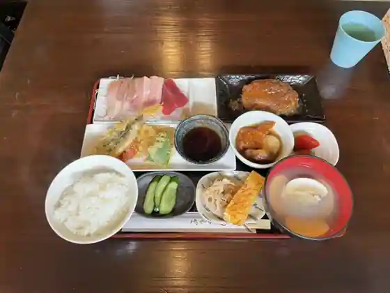
Kakure Ie Suzume
波音
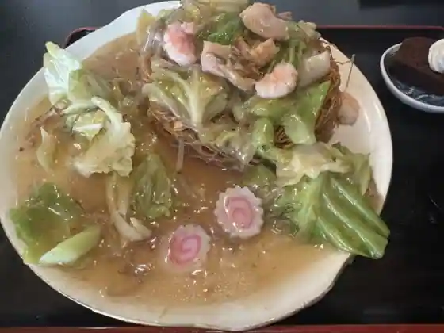
Namioto
内山屋 田町店
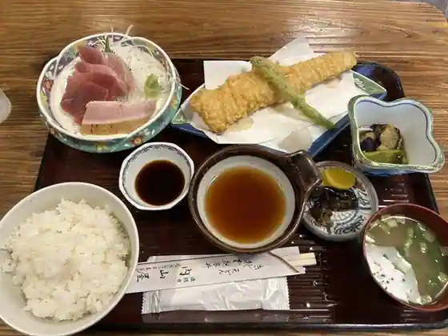
Uchiyama Ya Tamachi
百木屋
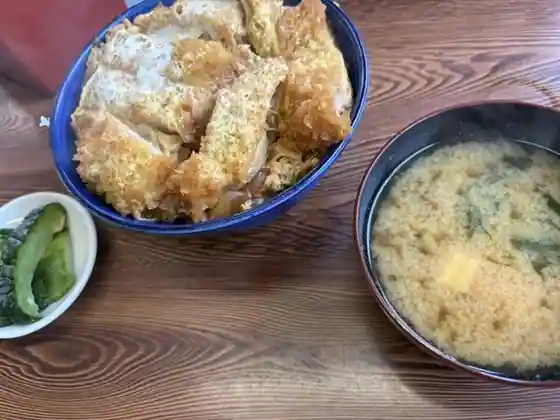
Hyaku Kiya
パンdeマァム
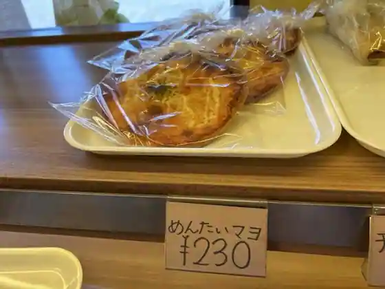
Bakery de Mamu
そば処割烹 浜菊
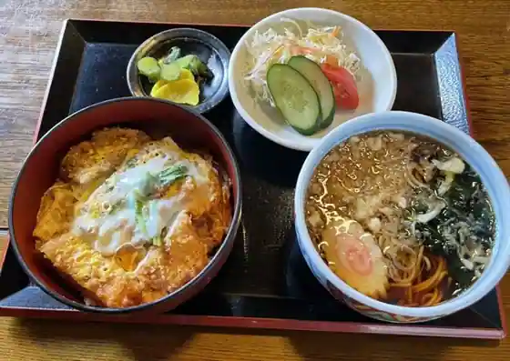
Soba Tokoro Kappo Hamagiku
大衆食堂 増田屋
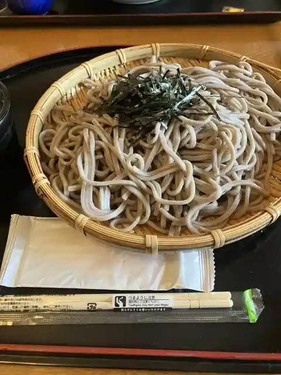
Taishu Shokudo Masudaya
港屋
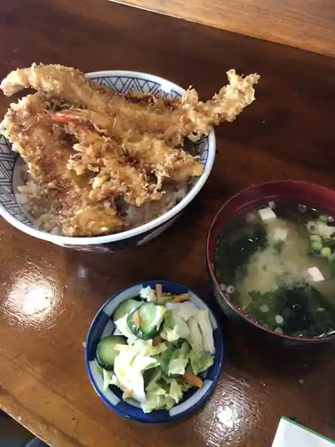
Minato Ya
Sights
Iidaka Danrin Ato (Iidaka Tera)
Matsuyama Teien Art Museum
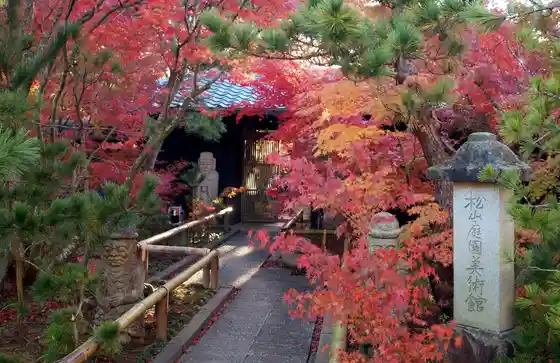
Sosa Kanko Bussan Center So Ri Village
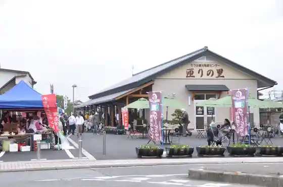
Yaegaki Shrine
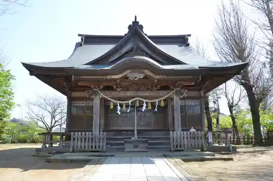
Fureai Park Yoka Market
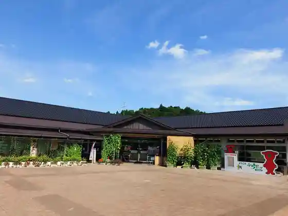
Nosaka Fureai Park
Tsubaki no Kaisui Shrine
Yoka City Ba Toshogu
Tenjin Yama Park
NAGARAMI RESORT SOSA
Matsuyama Shrine
Ro O Shrine
Warai Hono Forest CAMP&BBQ
Aku Yama no Sudajii
Soga Kyodai no Haka
Nishi Ozasa Hachiman Shrine
Kisetsu no Hana (Tsutsuji) / En Jitsu Tera